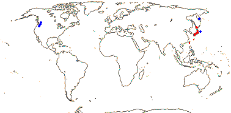
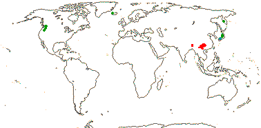

EMBRYOPSIDA Pirani & Prado
Gametophyte dominant, independent, multicellular, not motile, initially ±globular; showing gravitropism; acquisition of phenylalanine lysase [PAL], microbial terpene synthase-like genes +, triterpenoids produced by CYP716 enzymes, phenylpropanoid metabolism [lignans +, flavonoids + (absorbtion of UV radiation)], xyloglucans in primary cell wall, side chains charged; plant poikilohydrous [protoplasm dessication tolerant], ectohydrous [free water outside plant physiologically important]; thalloid, leafy, with single-celled apical meristem, tissues little differentiated, rhizoids +, unicellular; chloroplasts several per cell, pyrenoids 0; glycolate metabolism in leaf peroxisomes [glyoxysomes]; centrioles/centrosomes in vegetative cells 0, microtubules with γ-tubulin along their lengths [?here], interphase microtubules form hoop-like system; metaphase spindle anastral, predictive preprophase band + [with microtubules and F-actin; where new cell wall will form], phragmoplast + [cell wall deposition centrifugal, from around the anaphase spindle], plasmodesmata +; antheridia and archegonia jacketed, surficial; blepharoplast +, centrioles develop de novo, bicentriole pair coaxial, separate at midpoint, centrioles rotate, associated with basal bodies of cilia, multilayered structure + [4 layers: L1, L4, tubules; L2, L3, short vertical lamellae] (0), spline + [tubules from L1 encircling spermatid], basal body 200-250 nm long, associated with amorphous electron-dense material, microtubules in basal end lacking symmetry, stellate array of filaments in transition zone extended, axonemal cap 0 [microtubules disorganized at apex of cilium]; male gametes [spermatozoids] with a left-handed coil, cilia 2, lateral; oogamy; sporophyte multicellular, cuticle +, plane of first cell division transverse [with respect to long axis of archegonium/embryo sac], sporangium and upper part of seta developing from epibasal cell [towards the archegonial neck, exoscopic], with at least transient apical cell [?level], initially surrounded by and dependent on gametophyte, placental transfer cells +, in both sporophyte and gametophyte, wall ingrowths develop early; suspensor/foot +, cells at foot tip somewhat haustorial; sporangium +, single, terminal, dehiscence longitudinal; meiosis sporic, monoplastidic, MTOC [MTOC = microtubule organizing centre] associated with plastid, sporocytes 4-lobed, cytokinesis simultaneous, preceding nuclear division, quadripolar microtubule system +; wall development both centripetal and centrifugal, 1000 spores/sporangium, sporopollenin in the spore wall laid down in association with trilamellar layers [white-line centred lamellae; tripartite lamellae]; nuclear genome size [1C] <1.4 pg, main telomere sequence motif TTTAGGG, LEAFY and KNOX1 and KNOX2 genes present, ethylene involved in cell elongation; chloroplast genome with close association between trnLUAA and trnFGAA genes [precursors for starch synthesis], tufA gene moved to nucleus; mitochondrial trnS(gcu) and trnN(guu) genes +.
Many of the bolded characters in the characterization above are apomorphies of subsets of streptophytes along the lineage leading to the embryophytes, not apomorphies of crown-group embryophytes per se.
All groups below are crown groups, nearly all are extant. Characters mentioned are those of the immediate common ancestor of the group, [] contains explanatory material, () features common in clade, exact status unclear.
STOMATOPHYTES
Abscisic acid, L- and D-methionine distinguished metabolically; pro- and metaphase spindles acentric; sporophyte with polar transport of auxins, class 1 KNOX genes expressed in sporangium alone; sporangium wall 4≤ cells across [≡ eusporangium], tapetum +, secreting sporopollenin, which obscures outer white-line centred lamellae, columella +, developing from endothecial cells; stomata +, on sporangium, anomocytic, cell lineage that produces them with symmetric divisions [perigenous]; underlying similarities in the development of conducting tissue and of rhizoids/root hairs; spores trilete; shoot meristem patterning gene families expressed; MIKC, MI*K*C* genes, post-transcriptional editing of chloroplast genes; gain of three group II mitochondrial introns, mitochondrial trnS(gcu) and trnN(guu) genes 0.
[Anthocerophyta + Polysporangiophyta]: gametophyte leafless; archegonia embedded/sunken [only neck protruding]; sporophyte long-lived, chlorophyllous; cell walls with xylans.
POLYSPORANGIOPHYTA†
Sporophyte well developed, branched, branching apical, dichotomous, potentially indeterminate; hydroids +; stomata on stem; sporangia several, terminal; spore walls not multilamellate [?here].
TRACHEOPHYTA†
Vascular tissue + [tracheids, walls with bars of secondary thickening].
EXTANT TRACHEOPHYTA / VASCULAR PLANTS
Sporophyte with photosynthetic red light response, stomata open in response to blue light; plant homoiohydrous [water content of protoplasm relatively stable]; control of leaf hydration passive; plant endohydrous [physiologically important free water inside plant]; (condensed or nonhydrolyzable tannins/proanthocyanidins +); xyloglucans with side chains uncharged [?level], in secondary walls of vascular and mechanical tissue; lignins +; stem apex multicellular, with cytohistochemical zonation, plasmodesmata formation based on cell lineage; tracheids +, in both protoxylem and metaxylem, G- and S-types; sieve cells + [nucleus degenerating]; endodermis +; leaves/sporophylls spirally arranged, blades with mean venation density ca 1.8 mm/mm2 [to 5 mm/mm2], all epidermal cells with chloroplasts; sporangia adaxial, columella 0; tapetum glandular; ?position of transfer cells; MTOCs not associated with plastids, basal body 350-550 nm long, stellate array in transition region initially joining microtubule triplets; suspensor +, shoot apex developing away from micropyle/archegonial neck [from hypobasal cell, endoscopic], root lateral with respect to the longitudinal axis of the embryo [plant homorhizic].
[MONILOPHYTA + LIGNOPHYTA]Sporophyte endomycorrhizal [with Glomeromycota]; growth ± monopodial, branching spiral; roots +, endogenous, positively geotropic, root hairs and root cap +, protoxylem exarch, lateral roots +, endogenous; G-type tracheids +, with scalariform-bordered pits; leaves with apical/marginal growth, venation development basipetal, growth determinate; sporangium dehiscence by a single longitudinal slit; cells polyplastidic, MTOCs diffuse, perinuclear, migratory; blepharoplasts +, paired, with electron-dense material, centrioles on periphery, male gametes multiciliate; chloroplast long single copy ca 30kb inversion [from psbM to ycf2]; mitochondrion with loss of 4 genes, absence of numerous group II introns; LITTLE ZIPPER proteins.
LIGNOPHYTA†
Sporophyte woody; stem branching lateral, meristems axillary; lateral root origin from the pericycle; cork cambium + [producing cork abaxially], vascular cambium bifacial [producing phloem abaxially and xylem adaxially].
SEED PLANTS†
Plants heterosporous; megasporangium surrounded by cupule [i.e. = unitegmic ovule, cupule = integument]; pollen lands on ovule; megaspore germination endosporic [female gametophyte initially retained on the plant].
EXTANT SEED PLANTS / SPERMATOPHYTA
Plant evergreen; nicotinic acid metabolised to trigonelline, (cyanogenesis via tyrosine pathway); microbial terpene synthase-like genes 0; primary cell walls rich in xyloglucans and/or glucomannans, 25-30% pectin [Type I walls]; lignin chains started by monolignol dimerization [resinols common], particularly with guaiacyl and p-hydroxyphenyl [G + H] units [sinapyl units uncommon, no Maüle reaction]; root stele diarch to pentarch, xylem and phloem originating on alternating radii, cork cambium deep seated; stem apical meristem complex [with quiescent centre, etc.], plasmodesma density in SAM 1.6-6.2[mean]/μm2 [interface-specific plasmodesmatal network]; eustele +, protoxylem endarch, endodermis 0; wood homoxylous, tracheids and rays alone, tracheid/tracheid pits circular, bordered; mature sieve tube/cell lacking functioning nucleus, sieve tube plastids with starch grains; phloem fibres +; cork cambium superficial; leaf nodes 1:1, a single trace leaving the vascular sympodium; leaf vascular bundles amphicribral; guard cells the only epidermal cells with chloroplasts, stomatal pore with active opening in response to leaf hydration, control by abscisic acid, metabolic regulation of water use efficiency, etc.; axillary buds +, exogenous; prophylls two, lateral; leaves with petiole and lamina, development basipetal, lamina simple; sporangia borne on sporophylls; spores not dormant; microsporophylls aggregated in indeterminate cones/strobili; grains monosulcate, aperture in ana- position [distal], primexine + [involved in exine pattern formation with deposition of sporopollenin from tapetum there], exine and intine homogeneous, exine alveolar/honeycomb; ovules with parietal tissue [= crassinucellate], megaspore tetrad linear, functional megaspore single, chalazal, sporopollenin 0; gametophyte ± wholly dependent on sporophyte, development initially endosporic [apical cell 0, rhizoids 0, etc.]; male gametophyte with tube developing from distal end of grain, male gametes two, developing after pollination, with cell walls; female gametophyte initially syncytial, walls then surrounding individual nuclei; embryo cellular ab initio, suspensor short-minute, embryonic axis straight [shoot and root at opposite ends; plant allorhizic], cotyledons 2; embryo ± dormant; chloroplast ycf2 gene in inverted repeat, trans splicing of five mitochondrial group II introns, rpl6 gene absent; whole nuclear genome duplication [ζ - zeta - duplication], two copies of LEAFY gene, PHY gene duplications [three - [BP [A/N + C/O]] - copies], 5.8S and 5S rDNA in separate clusters.
ANGIOSPERMAE / MAGNOLIOPHYTA
Lignans, O-methyl flavonols, dihydroflavonols, triterpenoid oleanane, apigenin and/or luteolin scattered, [cyanogenesis in ANA grade?], lignin also with syringyl units common [G + S lignin, positive Maüle reaction - syringyl:guaiacyl ratio more than 2-2.5:1], hemicelluloses as xyloglucans; root cap meristem closed (open); pith relatively inconspicuous, lateral roots initiated immediately to the side of [when diarch] or opposite xylem poles; origin of epidermis with no clear pattern [probably from inner layer of root cap], trichoblasts [differentiated root hair-forming cells] 0, hypodermis suberised and with Casparian strip [= exodermis]; shoot apex with tunica-corpus construction, tunica 2-layered; starch grains simple; primary cell wall mostly with pectic polysaccharides, poor in mannans; tracheid:tracheid [end wall] plates with scalariform pitting, wood parenchyma +; sieve tubes enucleate, sieve plate with pores (0.1-)0.5-10< µm across, cytoplasm with P-proteins, not occluding pores of plate, companion cell and sieve tube from same mother cell; ?phloem loading/sugar transport; nodes 1:?; dark reversal Pfr → Pr; protoplasm dessication tolerant [plant poikilohydric]; stomata brachyparacytic [ends of subsidiary cells level with ends of pore], outer stomatal ledges producing vestibule, reduction in stomatal conductance with increasing CO2 concentration; lamina formed from the primordial leaf apex, margins toothed, development of venation acropetal, overall growth ± diffuse, secondary veins pinnate, fine venation hierarchical-reticulate, (1.7-)4.1(-5.7) mm/mm2, vein endings free; flowers perfect, pedicellate, ± haplomorphic, protogynous; parts free, numbers variable, development centripetal; P +, ?insertion, members each with a single trace, outer members not sharply differentiated from the others, not enclosing the floral bud; A many, filament not sharply distinguished from anther, stout, broad, with a single trace, anther introrse, tetrasporangiate, sporangia in two groups of two [dithecal], each theca dehiscing longitudinally by a common slit, ± embedded in the filament, walls with at least outer secondary parietal cells dividing, endothecium +, cells elongated at right angles to long axis of anther; tapetal cells binucleate; microspore mother cells in a block, microsporogenesis successive, walls developing by centripetal furrowing; pollen subspherical, tectum continuous or microperforate, ektexine columellate, endexine lamellate only in the apertural regions, thin, compact, intine in apertural areas thick, pollenkitt +; nectary 0; carpels present, superior, free, several, ascidiate [postgenital occlusion by secretion], stylulus at most short [shorter than ovary], hollow, cavity not lined by distinct epidermal layer, stigma ± decurrent, carinal, dry; suprastylar extragynoecial compitum +; ovules few [?1]/carpel, marginal, anatropous, bitegmic, micropyle endostomal, outer integument 2-3 cells across, often largely subdermal in origin, inner integument 2-3 cells across, often dermal in origin, parietal tissue 1-3 cells across, nucellar cap?; megasporocyte single, hypodermal, functional megaspore lacking cuticle; female gametophyte lacking chlorophyll, not photosynthesising, four-celled [one module, nucleus of egg cell sister to one of the polar nuclei]; ovule not increasing in size between pollination and fertilization; pollen grains land on stigma, bicellular at dispersal, mature male gametophyte tricellular, germinating in less than 3 hours, pollen tube elongated, unbranched, growing between cells, growth rate (20-)80-20,000 µm/hour, apex of pectins, wall with callose, lumen with callose plugs, penetration of ovules via micropyle [porogamous], whole process takes ca 18 hours, distance to first ovule 1.1-2.1 mm; male gametes lacking cell walls, ciliae 0, siphonogamy; double fertilization +, ovules aborting unless fertilized; P deciduous in fruit; mature seed much larger than fertilized ovule, small [], dry [no sarcotesta], exotestal; endosperm +, cellular, development heteropolar [first division oblique, micropylar end initially with a single large cell, divisions uniseriate, chalazal cell smaller, divisions in several planes], copious, oily and/or proteinaceous, embryo short [<¼ length of seed]; plastid and mitochondrial transmission maternal; Arabidopsis-type telomeres [(TTTAGGG)n]; nuclear genome size [1C] <1.4 pg [mean 1C = 18.1 pg, 1 pg = 109 base pairs], whole nuclear genome duplication [ε/epsilon event]; ndhB gene 21 codons enlarged at the 5' end, single copy of LEAFY and RPB2 gene, knox genes extensively duplicated [A1-A4], AP1/FUL gene, palaeo AP3 and PI genes [paralogous B-class genes] +, with "DEAER" motif, SEP3/LOFSEP and three copies of the PHY gene, [PHYB [PHYA + PHYC]]; chloroplast chlB, -L, -N, trnP-GGG genes 0.
[NYMPHAEALES [AUSTROBAILEYALES [[CHLORANTHALES + MAGNOLIIDS] [MONOCOTS [CERATOPHYLLALES + EUDICOTS]]]]]: wood fibres +; axial parenchyma diffuse or diffuse-in-aggregates; pollen monosulcate [anasulcate], tectum reticulate-perforate [here?]; ?genome duplication; "DEAER" motif in AP3 and PI genes lost, gaps in these genes.
[AUSTROBAILEYALES [[CHLORANTHALES + MAGNOLIIDS] [MONOCOTS [CERATOPHYLLALES + EUDICOTS]]]]: phloem loading passive, via symplast, plasmodesmata numerous; vessel elements with scalariform perforation plates in primary xylem; essential oils in specialized cells [lamina and P ± pellucid-punctate]; tension wood + [reaction wood: with gelatinous fibres, G-fibres, on adaxial side of branch/stem junction]; tectum reticulate; anther wall with outer secondary parietal cell layer dividing; nucellar cap + [character lost where in eudicots?]; 12BP [4 amino acids] deletion in P1 gene.
[[CHLORANTHALES + MAGNOLIIDS] [MONOCOTS [CERATOPHYLLALES + EUDICOTS]]] / MESANGIOSPERMAE: benzylisoquinoline alkaloids +; sesquiterpene synthase subfamily a [TPS-a] [?level], polyacetate derived anthraquinones + [?level]; outer epidermal walls of root elongation zone with cellulose fibrils oriented transverse to root axis; P more or less whorled, 3-merous [?here]; pollen tube growth intra-gynoecial; extragynoecial compitum 0; carpels plicate [?here]; embryo sac bipolar, 8 nucleate, antipodal cells persisting; endosperm triploid.
[MONOCOTS [CERATOPHYLLALES + EUDICOTS]]: (extra-floral nectaries +); (veins in lamina often 7-17 mm/mm2 or more [mean for eudicots 8.0]); (stamens opposite [two whorls of] P); (pollen tube growth fast).
[CERATOPHYLLALES + EUDICOTS]: ethereal oils 0.
EUDICOTS: (Myricetin, delphinidin +), asarone 0 [unknown in some groups, + in some asterids]; root epidermis derived from root cap [?Buxaceae, etc.]; (vessel elements with simple perforation plates in primary xylem); nodes 3:3; stomata anomocytic; flowers (dimerous), cyclic; protandry common; K/outer P members with three traces, ("C" +, with a single trace); A ?, filaments fairly slender, anthers basifixed; microsporogenesis simultaneous, pollen tricolpate, apertures in pairs at six points of the young tetrad [Fischer's rule], cleavage centripetal, wall with endexine; G with complete postgenital fusion, stylulus/style solid [?here]; seed coat?
[PROTEALES [TROCHODENDRALES [BUXALES + CORE EUDICOTS]]]: (axial/receptacular nectary +).
[TROCHODENDRALES [BUXALES + CORE EUDICOTS]]: benzylisoquinoline alkaloids 0; euAP3 + TM6 genes [duplication of paleoAP3 gene: B class], mitochondrial rps2 gene lost.
Age. Magallón and Castillo (2009) tentatively suggest an age of about 122.7 m.y. for this node, Magallón et al. (2015) an age of about 129 m.y., Foster et al. (2016a: q.v. for details) an age of ca 137 m.y. and Z. Wu et al. (2014) an age of around 188 m.y., far older, Vekemans et al. (2012: MRCA Buxales and Trochodendrales) an age of around (124.1-)122.6(-121.1) m.y. or a little less; around 128.2/124.8 m.y. are ages in Tank et al. (2015: Table S1, S2). The age for stem Trochodendrales in Wikström et al. (2003) is about (140-)135, 123(-118) m.y. - but relationships [B [T + CE]].
Evolution: Divergence & Distribution. Doyle (2013) is inclined to think that the evolution of 2-merous, wind pollinated flowers can be pegged to this node.
Genes & Genomes. For the paleoAP3 duplication, etc., see Lamb and Irish (2003), S. Kim et al. (2004b, 2005a), Zahn et al. (2005a), and especially Kramer et al. (2006); Kramer and Zimmer (2006) note that although the paleoAP3 gene has been found in Proteales and Sabiales, whether or not it occurs in Buxales and Trochodendrales remains unclear. EuAP3/PI are involved in stamen identity very much as paleoAP3/PI, but the former may be involved in petal development in core eudicots. For the loss of the rps2 mitochondrial gene, see Adams et al. (2002b), and for the duplication of the RPB1 and RPB2 genes, which may have occurred in the immediate ancestor of Trochodendrales, see Oxelman et al. (2004) and Luo et al. (2007). This latter is a complicated problem, since Buxaceae have no duplication in either gene and there has also been widespread loss of both genes.
Indeed, Chanderbali et al. (2016b) suggested that about half the gene duplications associated with the palaeohexaploidy γ triplication event are to be placed here, the other half being later, being placed at the core eudicot node.
Phylogeny. For discussion on the position of Trochodendrales, see the Ranunculales page.
TROCHODENDRALES Cronquist Main Tree.
Stomata laterocytic; flowers with cortical vascular system; anthers valvate, latrorse, filaments thin; G laterally connate, nectariferous abaxially, 5 vascular bundles/carpel; compitum 0; ovules apotropous, integuments long, micropyle bistomal; fruit an aggregate of follicles, styles becoming ± basal on the outer surface; endotestal cells with slightly thickened walls, exotegmic cells thick-walled, tracheidal, elongated; endosperm development?; ca 4 kb expansion of the inverted repeat. - 1 family, 2 genera, 2 species.
Note: Boldface denotes possible apomorphies, (....) denotes a feature common in the clade, exact status uncertain, [....] includes explanatory material. Note that the particular node to which many characters, particularly the more cryptic ones, should be assigned is unclear. This is partly because homoplasy is very common, in addition, basic information for all too many characters is very incomplete, frequently coming from taxa well embedded in the clade of interest and so making the position of any putative apomorphy uncertain. Then there are the not-so-trivial issues of how character states are delimited and ancestral states are reconstructed (see above).
Includes Trochodendraceae.
Synonymy: Trochodendrineae Engler - Trochodendranae Reveal
TROCHODENDRACEAE Eichler, nom. cons. Back to Trochodendrales
Evergreen trees; flavonols +; petiole bundle arcuate; buds with scales; lamina toothed, secondary veins proceed to a clear, persistent cap, lateral veins also enter; cuticle waxes with nonacosan-10-ol a major component; pollen tectum reticulate-striate; G very slightly inferior; ovules with chalazal protrusion; seeds flattened, with marginal flange, chalazal hair-pin bundle +.
2/2 [list]. Southeast Asia, scattered.
Age. Estimates for the divergence times of the two genera are (113-)106, 95(-88) m.y. Wikström et al. (2001), (65-)20, 19(-7) m.y.a. (Bell et al. 2010) and 44-30 m.y.a. (Sun et al. 2013).
Fossils of Trochodendraceae are known from since the late Cretaceous as Nordenskioldia, more properly Nordenskioeldia, close to Trochodendron (see also Friis et al. 2011). They are widely distributed around the northern hemisphere in the Eocene, and are sometimes at very high latitudes (Crane et al. 1991; Pigg et al. 2001, 2007; Taylor et al. 2009; Harrington et al. 2011). However, the hairpin loop in the seed is not found in at least some fossil Trochodendraceae (Crane et al. 1991, but c.f. Doweld 1998c); postgenital fusion of the carpels may not occur. Fossils of both the extant genera are known from the Eocene onwards (Friis et al. 2011 and references).
1. Trochodendron Siebold & Zuccarini
Trochodendron">Myricetin +; plant glabrous; pits bordered; vessels 0; young stem with separate vascular bundles; rays ca 12-seriate; nodes 1:1-7:7; ± branched sclereids +; leaves spiral, venation subpinnate; plant androdioecious, inflorescence terminal; P 0-5, minute, not vascularized; A many, ± spiral; G [(4-)6-11(-17)], with a secretion canal, placentation apical-axile, styluli erect, stigma decurrent in two crests; ovules many/carpel; (follicles also opening abaxially); seeds pendulous, endotesta sclerotic; endosperm cellular; n = 20.
1/1: Trochodendron aralioides. Japan to N. Taiwan (map: red, fossils blue [Japan - N.E. Honshu, not in the sea...], Pigg et al. 2001, 2007). [Photo - Collection, Inflorescences.]
2. Tetracentron Oliver
Tetracentron">Chalcones or dihydrochalcones +; secretory cells +; leaves two-ranked, lamina vernation supervolute, secondary veins palmate, leaf base broad, thin latero-basal flange enveloping axillary bud, lamina with palmate venation; inflorescence axillary, spicate, pendulous; flowers sessile, small, 4-merous; P 4, vascular bundle rudimentary; A equal and opposite P; G [4], alternate with P, styluli short, spreading, placentation axile; ovules 5-6/carpel; testa multiplicative, meso- and endotesta lignified, tegmen two layered; endosperm nuclear; n = 24.
1/1: Tetracentron sinense. China, Nepal (map: from Hara & Kanai 1964; fossils green, from Grímsson et al. 2008).
Synonymy: Tetracentraceae A. C. Smith, nom. cons.
Evolution: Divergence & Distribution. Both Trochodendron and Tetracentron were widely distributed in the northern hemisphere is the Caenozoic (Grímsson et al. 2008: Tetracentron; Friis et al. 2011). However, in some fossils assigned to Trochodendron there are paired auricles or foliaceous stipels at the base of the lamina (Pigg et al. 2007).
Genes & Genomes. For the chloroplast genome of the two species, see Sun et al. (2013).
Chemistry, Morphology, etc. Vessel elements with scalariform to scalariform-reticulate perforation plates have recently been reported from Tetracentron and Trochodendron, although both genera had long been considered to lack vessels (Hacke et al. 2007; Ren et al. 2007a; H.-F. Li et al. 2011; c.f. Bailey & Thompson 1918).
In Tetracentron the petiole becomes round towards the base, and there is a marginal flange that tightly and totally envelops the axillary bud; the base of the petiole is broad and the scar encircles much of the stem. In Trochodendron, on the other hand, not only is nodal anatomy variable and the leaves on the adult plant have a narrow petiole and often lack axillary buds, in the young plant the leaves are more similar to those of Tetracentron (Bailey & Nast 1945; Nast & Bailey 1955). Although Baranova (1983) described both genera as having laterocytic stomata, Metcalfe and Chalk (1950) described and drew the stomata of Trochodendron as being laterocylic, while the stomata are of Trochodendron are cyclocytic, according to Carlquist (1982)....
The micropyle of Trochodendron is described as being endostomal in Johri et al. (1992) and Endress and Igersheim (1999), but it looks bistomal in Takhtajan (1991). In both genera the adaxial side of the carpel develops greatly as the fruits ripen and so the style becomes basal on the abaxial side of the follicle.
See Endress (1993) for general information, Aiso et al. (2016) for reaction (tension) wood, Nast and Bailey (1945) for flowers, fruits and summary, Endress (1986b) for floral morphology, Wu et al. (2007) for perianth evolution, Erbar (2014) for nectaries and Chen et al. (2007) for floral morphology of Tetracentron; Rix and Crane (2007) provide general information about Tetracentron.
Previous Relationships. The relationships of the two genera included in Trochodendraceae have been somewhat obscure, although their apparent lack of vessels had long typed them as being primitive angiosperms. Endress (1986b) compared the sclereids of Trochodendron and the secretory cells of Tetracentron with the cells secreting ethereal oils in magnoliids, etc., and linked the two genera with Cercidiphyllaceae (here Saxifragales) and Eupteleaceae (Ranunculales) in an expanded Trochodendrales (c.f. also Takhtajan 1997 and Thorne 2007 in part). Kai-yu et al. (1993) suggested that Tetracentron should be put in its own order.
Classification. Including Tetracentraceae in Trochodendraceae was an option in A.P.G. II (2003). The two families do have quite a lot in common, as is clear from the fairly lengthy ordinal description, and since both are monotypic, combination is in order (see A.P.G. III 2009).
![Inflorescences.]](javascript:showImage('http://www.csdl.tamu.edu/FLORA/schoepke/tro-ar-1.jpg',600,500)){kind=link}